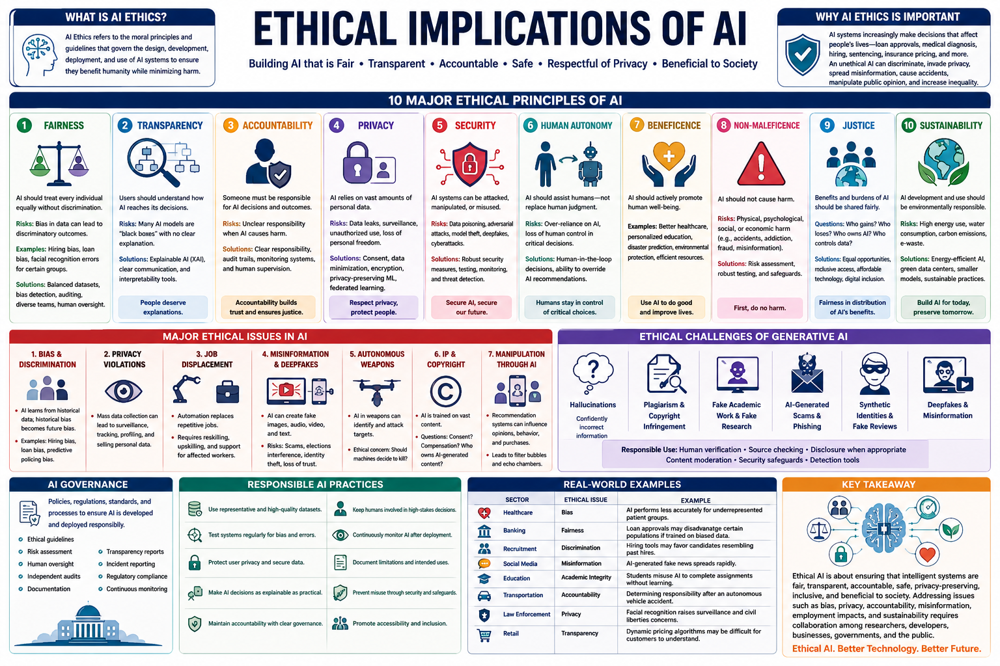

Importance of Implications of Ethics in AI
As artificial intelligence systems increasingly influence hiring, healthcare, criminal justice, and content generation, the ethical implications demand rigorous examination. This guide explores the 10 most critical factors shaping AI ethics — from bias and fairness to transparency and accountability — with practical frameworks, code examples, and CGAI exam-focused questions.

Training CorpusLearning & InferenceReal-world ImpactAudit → Regulate → Improve📊 The end-to-end AI ethics pipeline — from data collection through deployment and governance
Historical biases in training data are the primary source of AI unfairness. Models learn and amplify patterns present in the data they are trained on.
Quantitative measures to assess whether a model treats different groups equitably. Common metrics include demographic parity, equalized odds, and equal opportunity.
The ability to understand and interpret how an AI system makes decisions. Black-box models create accountability gaps that undermine trust.
Clear assignment of responsibility for AI decisions. Without accountability, harmful outcomes cannot be remedied — a core governance failure.
AI systems often process sensitive personal data. Privacy-preserving techniques like differential privacy and federated learning are essential.
AI systems affect employment, inequality, and social dynamics. Generative AI can displace jobs, spread misinformation, and concentrate power.
AI should augment, not replace, human decision-making. Over-reliance on AI systems erodes critical thinking and individual autonomy.
Evolving legal frameworks like the EU AI Act, GDPR, and emerging US regulations impose requirements on AI development and deployment.
AI systems must be reliable under distribution shifts, adversarial attacks, and edge cases. Unsafe AI can cause real-world harm.
Training large AI models consumes enormous energy. The carbon footprint of generative AI is a growing ethical concern requiring sustainable practices.
Ethical AI rests on well-established principles and mathematical formulations. These frameworks provide the vocabulary and metrics for evaluating AI systems.
Each ethical principle has a measurable dimension. Understanding these terms is essential for the CGAI exam.
Classifies AI systems into four risk tiers: unacceptable (banned), high (regulated), limited (transparency required), and minimal (unregulated).
Standardized documentation that discloses a model's intended use, limitations, evaluation results, and ethical considerations — pioneered by Google.
Practical steps to integrate ethics into the AI development lifecycle — from data collection through deployment.
Systematically evaluate training data and model outputs for bias across protected attributes before deployment.
Incorporate fairness constraints directly into the training objective. Penalize the model when predictions diverge across protected groups.
Create standardized documentation covering intended use, out-of-scope applications, training data provenance, and fairness evaluation results.
Include diverse perspectives in AI development. Homogeneous teams miss biases that affect underrepresented groups.
Proven techniques to reduce bias and improve fairness at every stage of the AI pipeline.
Adjust sample weights to balance representation across groups. Underrepresented groups get higher weights during training.
Train an adversary to predict protected attributes; penalize the main model when the adversary succeeds. Forces group-invariant representations.
Adjust decision thresholds per group to equalize fairness metrics. Simple but effective when retraining isn't possible.
Model fairness degrades over time as data distributions shift. Implement automated monitoring dashboards to track fairness metrics in production.
Complete pipeline demonstrating bias audit, fairness-aware training with adversarial debiasing, and post-deployment monitoring.
⬆️ Complete ethics-aware pipeline: data audit → adversarial debiasing → fairness evaluation.
| # | Ethics Factor | Key Concern | Mitigation Approach |
|---|---|---|---|
| ① | Data Bias | Historical biases in training data | Data auditing, reweighting, balanced sampling |
| ② | Fairness Metrics | Unequal treatment across groups | Demographic parity, equalized odds, equal opportunity |
| ③ | Transparency | Black-box decision making | SHAP, LIME, inherently interpretable models |
| ④ | Accountability | No clear responsibility for harm | Audit trails, model cards, human oversight |
| ⑤ | Privacy | Exposure of sensitive personal data | Differential privacy, federated learning |
| ⑥ | Societal Impact | Job loss, inequality, misinformation | Impact assessments, stakeholder engagement |
| ⑦ | Human Agency | Over-reliance on AI decisions | Human-in-the-loop, contestability mechanisms |
| ⑧ | Regulation | Non-compliance with legal frameworks | EU AI Act compliance, GDPR, ISO standards |
| ⑨ | Safety & Robustness | Vulnerability to adversarial attacks | Red-teaming, adversarial training, OOD testing |
| ⑩ | Environmental Impact | Carbon footprint of large models | Carbon tracking, model distillation, green compute |
Consequences of ignoring ethics
Benefits of responsible development
Minimum requirements before deploying any AI system:
🔬 Ethics is not a checkbox — it's a continuous process integrated throughout the AI lifecycle.
| Regulation | Jurisdiction | Key Requirements |
|---|---|---|
| EU AI Act | European Union | Risk-based classification, conformity assessments, human oversight for high-risk AI |
| GDPR | European Union | Data minimization, right to explanation, data protection impact assessments |
| Algorithmic Accountability Act | USA (proposed) | Impact assessments for automated decision systems, FTC oversight |
| ISO/IEC 42001 | International | AI management system standard — governance, risk, and continuous improvement |
20 questions covering bias, fairness metrics, transparency, privacy, regulations, and responsible AI deployment.